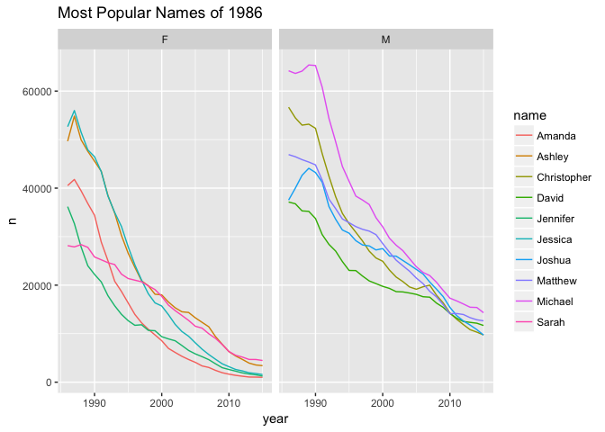

Garrett Grolemund, Nathan Stephens, John Mount and Nina Zumel
Use dplyr syntax to write Apache Spark SQL queries. Use select, where, group by, joins, and window functions in Aparche Spark SQL.
knitr::opts_chunk$set(warning = FALSE, message = FALSE)
library(sparklyr)
library(dplyr)##
## Attaching package: 'dplyr'## The following objects are masked from 'package:stats':
##
## filter, lag## The following objects are masked from 'package:base':
##
## intersect, setdiff, setequal, unionlibrary(tidyr)
library(babynames)
library(ggplot2)
library(dygraphs)
library(rbokeh)Install and connect to a local Spark instance. Copy data into Spark DataFrames.
sc <- spark_connect(master = "local")
babynames_tbl <- copy_to(sc, babynames, "babynames", overwrite = TRUE)
applicants_tbl <- copy_to(sc, applicants, "applicants", overwrite = TRUE)Plot total US births recorded from the Social Security Administration.
First, for practice, do it locally in the applicants data frame, and tidyr::spread
# local approach
birthsYearly <- applicants %>%
mutate(n_all = n_all/1000000) %>%
tidyr::spread(sex, n_all)
# try it with remote data. Oops! This fails at tidyr::spread
birthsYearly <- applicants_tbl %>%
mutate(n_all = n_all/1000000) %>%
tidyr::spread(sex, n_all)## Error in UseMethod("spread_"): no applicable method for 'spread_' applied to an object of class "c('tbl_spark', 'tbl_sql', 'tbl_lazy', 'tbl')"Now simulate tidyr::spread on the remote data, and continue.
# by-hand spread on remote data
birthsYearly <- applicants_tbl %>%
mutate(male = ifelse(sex == "M", n_all, 0), female = ifelse(sex == "F", n_all, 0)) %>%
group_by(year) %>%
summarize(Male = sum(male) / 1000000, Female = sum(female) / 1000000) %>%
arrange(year) %>%
collect
# ## Or use dev-version of replyr: https://github.com/WinVector/replyr
# birthsYearly <- applicants_tbl %>%
# replyr::replyr_moveValuesToColumns(columnToTakeKeysFrom = 'sex',
# columnToTakeValuesFrom = 'n_all',
# rowKeyColumns = 'year') %>%
# mutate(Male= M/1000000, Female = F/1000000) %>%
# select(year, Male, Female) %>%
# arrange(year) %>%
# collect
# plot it
birthsYearly %>%
dygraph(main = "Total US Births (SSN)", ylab = "Millions") %>%
dySeries("Female") %>%
dySeries("Male") %>%
dyOptions(stackedGraph = TRUE) %>%
dyRangeSelector(height = 20) Use Spark SQL to create a look up table.
topNames_tbl <- babynames_tbl %>%
filter(year >= 1986) %>%
group_by(name, sex) %>%
summarize(count = sum(n)) %>%
filter(count > 1000) %>%
select(name, sex) %>%
compute
yearlyNames_tbl <- babynames_tbl %>%
filter(year >= 1986) %>%
inner_join(topNames_tbl, by = c("sex", "name")) %>%
computeIdentify the top 5 male and female names from 1986. Visualize the popularity trend over time.
topNames1986_tbl <- yearlyNames_tbl %>%
filter(year == 1986) %>%
group_by(sex) %>%
mutate(rank = min_rank(desc(n))) %>%
filter(rank <= 5) %>%
arrange(sex, rank) %>%
select(name, sex, rank) %>%
compute
topNames1986Yearly <- yearlyNames_tbl %>%
inner_join(topNames1986_tbl, by = c("sex", "name")) %>%
collect
ggplot(topNames1986Yearly, aes(year, n, color=name)) +
facet_grid(~sex) +
geom_line() +
ggtitle("Most Popular Names of 1986")
Visualize the most popular names that are shared by both males and females.
sharedName <- babynames_tbl %>%
mutate(male = ifelse(sex == "M", n, 0), female = ifelse(sex == "F", n, 0)) %>%
group_by(name) %>%
summarize(Male = as.numeric(sum(male)),
Female = as.numeric(sum(female)),
count = sum(n),
AvgYear = round(as.numeric(sum(year * n) / sum(n)),0)) %>%
filter(Male > 30000 & Female > 30000) %>%
collect
figure(width = NULL, height = NULL,
xlab = "Log10 Number of Males",
ylab = "Log10 Number of Females",
title = "Top shared names (1880 - 2014)") %>%
ly_points(log10(Male), log10(Female), data = sharedName,
color = AvgYear, size = scale(sqrt(count)),
hover = list(name, Male, Female, AvgYear), legend = FALSE)